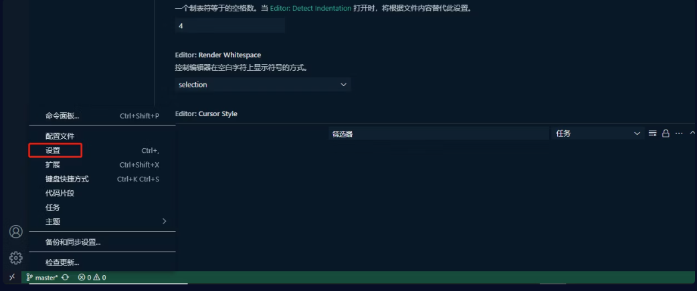
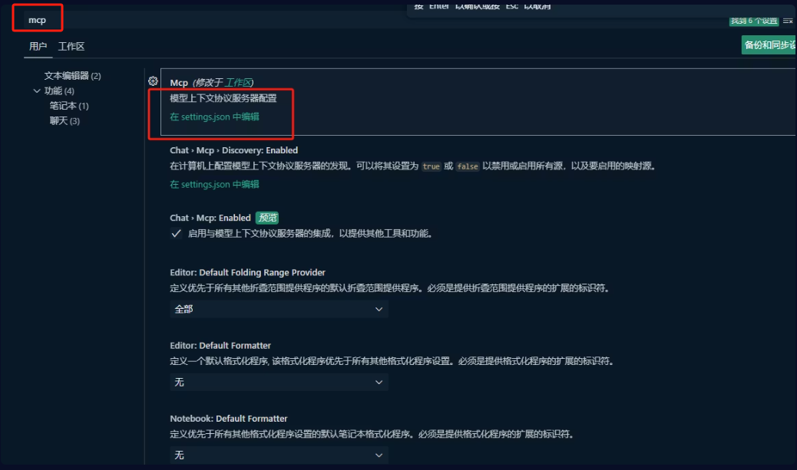
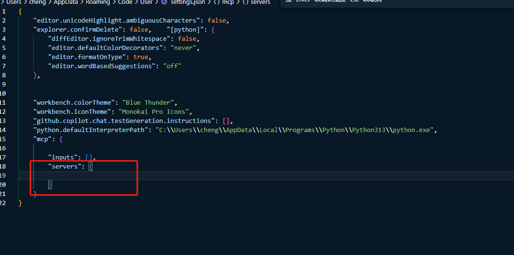
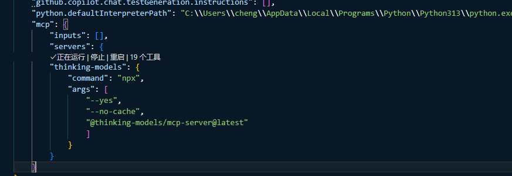
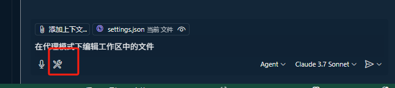

Visual Studio Code 配置指南
本文档将指导您如何在 Visual Studio Code 中配置 MCP（Model Context Protocol）服务器
配置流程
配置 MCP 服务器需要管理员权限。请确保您具有相应的操作权限。
- 启动 Visual Studio Code，通过以下任一方式打开设置：
- 点击左下角的齿轮图标，选择"设置"

- 或者使用快捷键 Ctrl+,
- 在设置界面中：
- 搜索"mcp"关键字

- 找到或创建
mcpServers 配置节点

- 按规范格式添加服务器配置信息

- 配置完成后，MCP 服务器将在 Agent 模式的工具栏中显示，以供调用
